跨界媒介的碰撞：蜂巢+刺绣 | Ava Roth 「艺术访谈」
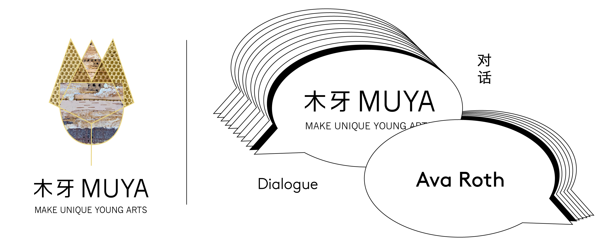欢迎来到木牙Make Unique Young Arts，让我们来探索跨领域/有机材料艺术与蜜蜂的世界🐝～
说到蜜蜂，我们最先想到的是传播花粉。花粉也是蜜蜂的营养，油脂来源，而蜜蜂将花蜜消化和处理后的合成物就是蜂蜜，蜂窝则是蜂蜜的储存室。蜂蜡是由长期工作的工蜂（发育不完全的雌性蜜蜂）从它们腹部的一系列腺体中分泌出来的，用来构建蜂巢的墙壁与顶盖。这就是蜂巢的全部也是蜜蜂的家。
When it comes to bees, the first thing that comes to mind is pollination. Pollen is also a nutrient and oil source for bees, and the compound the bees digest and process is honey, and the beehive is the storage room for honey. Wax is secreted from a series of glands in the abdomen by long-working worker bees (immature female bees), which are used to build the walls and roof of the hive. That's all there is to the hive and home to the bees.
虽然说建筑蜂巢是蜜蜂的天性，但想要将活体蜂巢和艺术作品结合也不是一件容易的事情。在创作过程中我们一直在寻找并且尝试各种不同材料试图找到那个属于自己的材料结合应用形成自己的新作品。蜂巢作为一种有机材料被应用到刺绣是非常难得的一种体验和机遇。和蜜蜂交流沟通一起合作创作作品却不是一件容易的事情。需要花费许多的心力，尝试，还要冒着被蜜蜂扎伤的风险。
Although it is in the nature of bees to build hives, it is not easy to combine living hives with art works. In the process of creation, we are always looking for and experimenting with different materials, trying to find the materials that belong to us and combining them to form our own new works. The application of honeycomb as an organic material to embroidery is a very rare experience and opportunity. It is not easy to communicate with bees and work together to create works. It takes a lot of effort, trying, and risking a bee sting.
而今天我们有幸邀请到来Ava Roth来到木牙MUYA，来和我们分享她与蜜蜂合作的故事和是什么灵感让她想到将蜂巢与刺绣结合的。
We have the great opportunity to have Ava Roth to MUYA. Discuss and share with us her story of working with bees and what inspired her to combine the beehive with embroidery.
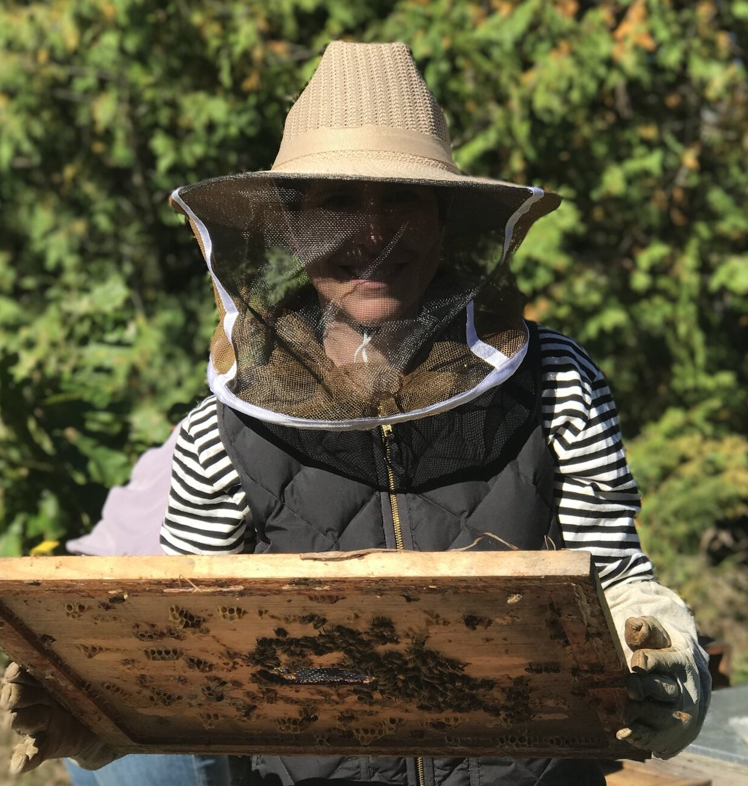
Ava Roth是多伦多的“迷恋画家”，刺绣师和混合媒体画家。Roth当前的作品汇集了来自离散美术和手工艺世界的技术。她缝制的迷恋绘画系列，迷恋的刺绣作品集以及活蜂蜂箱的作品，都突破了我们在每种个人实践中想象的界限。
Ava Roth is a Toronto-based encaustic painter, embroiderer and mixed-media artist. Roth’s current work brings together techniques from the discrete worlds of fine art and crafts. Her series of sewn encaustic paintings, her collection of encaustic embroideries and her work with live bee hives all push the boundaries of what we imagine possible in each individual practice.
Roth尽可能使用天然和当地材料。她的作品包含了加拿大蜂蜡，回收的安大略谷仓木材，白桦树皮，亚麻，风景摄影和纸张。她从根本上受到使用有机材料的指导和启发。
Roth uses natural and local materials whenever possible. Canadian beeswax, reclaimed Ontario barn wood, birch bark, linen, landscape photography and paper are hallmarks of her work. She is fundamentally guided and inspired by the organic materials she uses.
Ava Roth 的作品在多伦多的Loop画廊，渥太华的Wallspace画廊和西雅图的Frederick Holmes and Company都展出过。除了个人展览和团体展览之外，Roth的作品还曾在许多在线和印刷杂志上展出，她的绘画作品多次获奖。她的作品已被加拿大乃至全球的私人收藏家收购。
Ava Roth is represented by Loop Gallery, in Toronto, Wallspace Gallery, in Ottawa and Frederick Holmes and Company, in Seattle. In addition to exhibiting in solo and group shows, Roth's work has been featured in many on-line and print magazines, and she has been the recipient of several awards for her paintings. Her pieces have been acquired by private collectors throughout Canada and internationally.

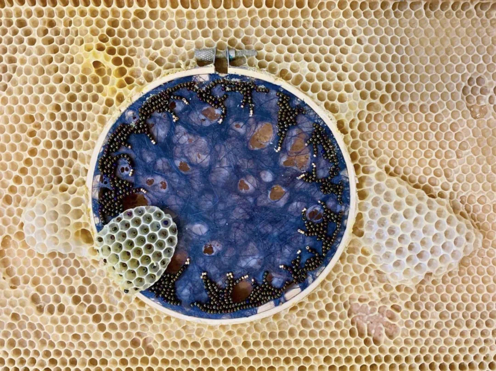

在使用蜡作画多年之后，我想到了这个项目的想法。与蜜蜂合作的渴望源于我对这种材料的崇敬，以及对殖民地崩溃失调意识的增强。蜜蜂通常被认为是地球健康的预兆，许多人将蜜蜂的大规模全球消失解释为对环境造成危害的指标。该项目探索了人类与自然环境碰撞的边界，并重新想象了这种相遇的可能结果。当我们对气候状况以及我们在其破坏作用中的绝望不堪重负之时，这一收藏基本上是充满希望的。
The idea for this project came to me after years of working with wax as an encaustic painter. The urge to collaborate with bees originated with my reverence for that material, along with an increasing awareness of Colony Collapse Disorder. Honey bees are often considered a harbinger of the health of our planet, and their mass global disappearance is interpreted by many as an indicator of our environment's peril. This project explores the boundaries of where humans collide with the natural environment, and re-imagines the possible outcomes of this encounter. The collection is essentially hopeful at a time when we are overwhelmed with despair at the state of the climate, and our role in its destruction.
该系列的作品庆祝蜜蜂的精致和复杂的工作，并试图在嬉戏的音乐会中反映出这些品质。我的混合媒体绣花呼应了蜂窝的美丽和短暂特征。该项目实质上是种间合作。每件作品均由传统Langstroth蜂巢框架内的无毒材料制成。我不操纵条件，例如蜂巢的结构或蜜蜂自然地建立蜂巢所花费的时间。框架只是简单地滑入蜂巢，并在蜜蜂家的黑暗私密环境中被蜜蜂“整理”。
The pieces in this series celebrate the bees’ delicate and complex work, and attempt to mirror these qualities in playful concert. My mixed media embroideries echo the beautiful and ephemeral characteristics of the honeycomb. The project in essence is an inter-species collaboration. Each piece is made with non-toxic materials inside traditional Langstroth hive frames. I do not manipulate conditions, such as the structure of the hive or the time it takes bees to naturally build comb. The frames are simply slipped into the hives, and “finished” by bees in the dark privacy of their home.
这个项目已经进行了两年。掌握复杂的变量需要花费大量的时间尝试和犯错，例如蜜蜂应对和抗拒（或销毁）何种材料，如何将碎片从蜂巢中移动或移出蜂巢以防止杂物的存在。如何向蜜蜂“传达”有关在哪里建立和在哪里不建立蜂窝的说明。我一直在与养蜂大师Mylee Nordin合作，后者在制定，实施甚至帮助概念化该项目的范围方面都是必不可少的。
This project has been two years in the making. It has taken a tremendous amount of trial and error to master the complex variables, such as what materials the bees respond to and reject (or destroy), how fast to get the pieces in and out of the hive in order to prevent the presence of brood or honey in the comb, how to “communicate” instructions to the bees about where to build and where not to build comb. I’ve been working with master beekeeper Mylee Nordin, who has been indispensable in strategizing, implementing, and even helping to conceptualize the scope of this project.
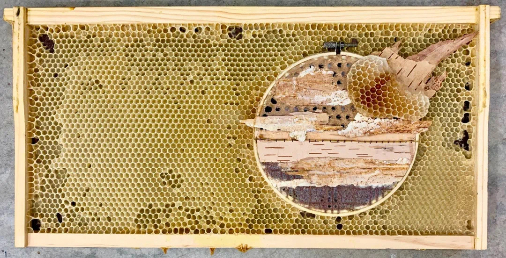
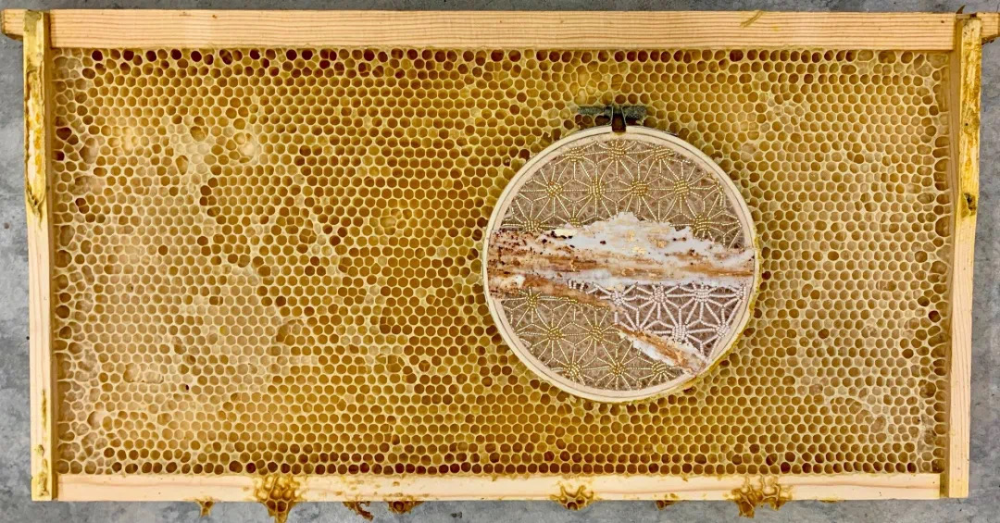
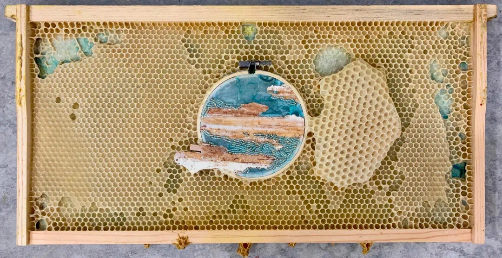
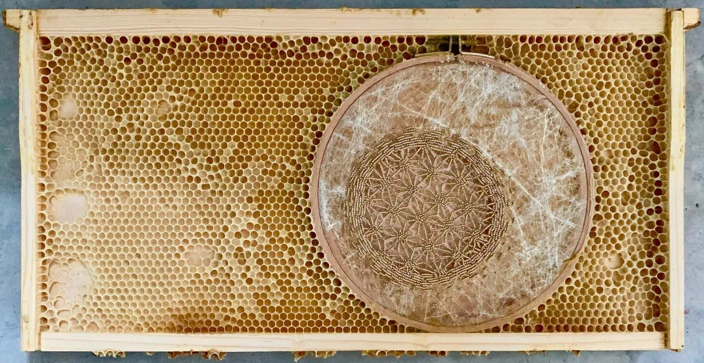

➤ 木牙MUYA: 材料的选择一直都是一个实验性的过程。您的作品将多种不同媒介和材料进行拼贴，您是通过怎样的方式筛选材料进行创作的呢？什么又是材料的唯一性呢？
Material selection has always been an experimental process. Your works collage with a variety of different media and materials. How do you select materials for creation? And, What is the uniqueness of the material?
Ava Roth: 我非常喜欢使用有机材料，但是在我与蜜蜂合作的情况下，这些材料也必须适用于蜜蜂。我最关心的是蜜蜂的安全性，因为我不想运用任何有毒物质或任何可能会损害其蜂群完整性的物质。我还必须确保材料足够小并且足够灵活以适合框架内部，因为框架必须适合标准蜂箱。最后，我尝试寻找不会随着时间而分解或变质的有机材料，从而使我的作品变得稳定从而更好保存。
I am always drawn to using organic materials, but in the case of my bee collaboration, the materials also have to amenable to the bees. My first concern is safety for the bees since I don’t want to introduce anything toxic or anything that could compromise the integrity of their colony. I also have to make sure that the materials are small enough and flexible enough to fit inside the frames since the frames must fit into a standard beehive. Finally, I try to find organic materials that will not decompose or deteriorate over time, so that my piece of art is stable and archival.
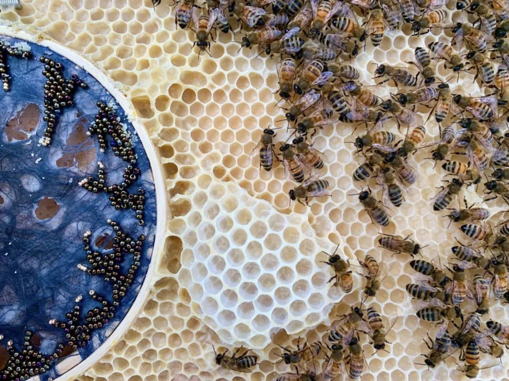
➤ 木牙MUYA: 现在关于当代独立女性艺术家的评论以及争议非常之多。在早期，女性是无法成为艺术家并且得到公平对待的，而现在女性艺术家逐渐开始被接受。对此Roth有哪些关于自己的想法呢？
There has been a lot of criticism and controversy about contemporary independent female artists. In the early days, women could not be artists and were treated fairly, but now female artists are gradually being accepted. What does Roth think of the situation?
Ava Roth: 我感到非常幸运，能够生活在一个受到女性视觉艺术家的高度尊重和我们的作品合法化的时代和地方。我知道这在历史上不是这种情况，今天在世界许多地方也并非如此，但是在我在多伦多市中心的职业生涯中，我不知道自己的工作遇到过任何争议或公平问题因为我是女人不幸的是，在许多其他工作领域以及许多其他努力中，情况并非如此！在大多数领域，妇女仍然存在许多歧视和障碍，并付出了不平等的待遇。但幸运的是，我的视觉艺术还没有遇到过这种情况。
I feel very lucky to live in a time and place where female visual artists are largely respected and our work legitimized. I am aware this has not been the case historically, and that it is not the case in many parts of the world today but in my career in downtown Toronto I am not aware of having encountered any controversy or equity issues with respect to my work because I am a woman. Unfortunately, that is not the case with many other lines of work and with many other endeavors! There is still a lot of discrimination and obstacles and pay inequity for women in most fields. But luckily I have not encountered this with my visual art.
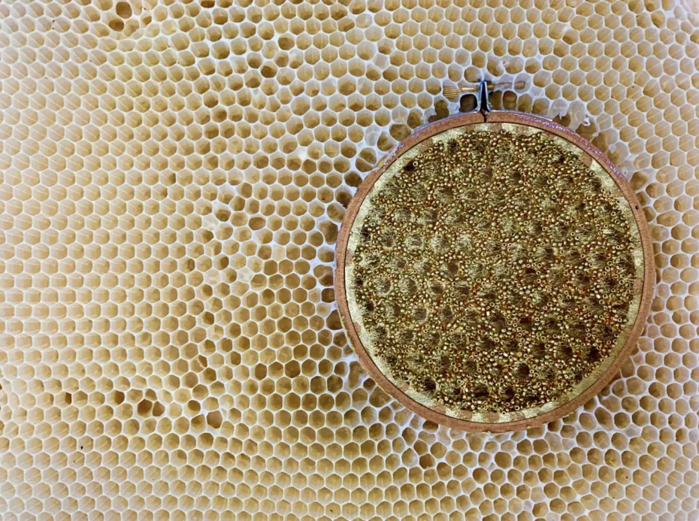
➤ 木牙MUYA: 看到您的作品中有部分是photography的元素，您觉得photography在您的作品占据着怎样的构成呢？或扮演怎样的角色呢？
Seeing that some of your works are photography elements, what kind of composition do you think photography occupies in your works? Or what kind of role?
Ava Roth: 的确，我的一些作品涉及到摄影，但是我会将使用的照片切成小块，然后重新组装在更大的画布上，所以我在思考构图时，通常是在大块的背景下进行的与照片本身相反。在这一点上，我必须平等地考虑构成作品的所有要素，而我最关心的始终是每件作品中的张力和平衡。
It is true that some of my work involves photography, but the photograhs I use are always cut into smaller pieces and re-assembled on a larger canvas, so by the time I am considering composition it is usually in the context of a big piece, as oppose to in the photograph itself. At that point, I must think about all the elements of composition equally, and I am always most concerned about tension and balance in each piece.
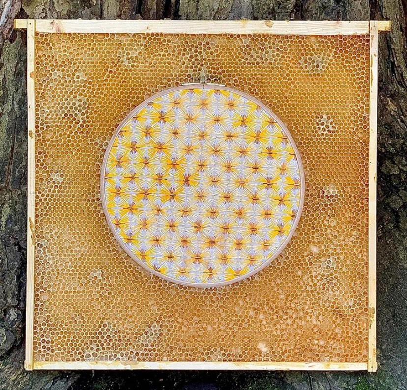
➤ 木牙MUYA: 看到您在很多的画廊都有作品的展览，我们很好奇您是如何将这样原生态和自然的作品搬入画廊展厅展示的呢？蜂巢是否会存在时效问题？
Seeing that you have exhibited your works in many galleries, we are very curious about how you brought such original and natural works into the gallery exhibition. Does the honeycomb have an aging problem?
Ava Roth: 蜂窝本身很稳定并且不会因为时间而变坏，尽管它很脆弱并且很容易被压碎。因此，尽管它不存在老化问题，但我还是必须将其理解归类为潜在的临时艺术品。
The honeycomb is in itself very stable and will not deteriorate over time, although it is fragile and can be easily be crushed. So, although it does not have a problem with aging, I do believe must be understood as a potentially temporary piece of art.
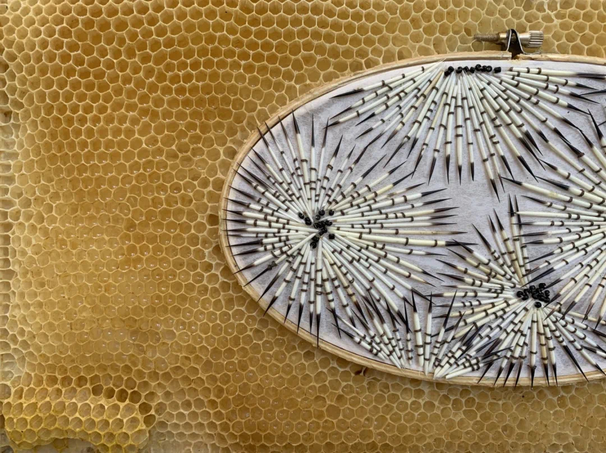
➤ 木牙MUYA: Roth参与了许多展览其中包括寄往国外的。作品在寄往展览的过程中难免会遇到颠簸。蜂窝属于敏感性物质以及容易损坏，Roth是如何打包作品进行运输的呢？有什么特殊的保护手法和特殊的运货渠道吗？
Roth has participated in many exhibitions including international exhibitions. There are bumps in the road when work is sent to an exhibition. Honeycomb is a sensitive substance and vulnerable to damage. How did Roth package the work for shipment? Are there any special protection methods and special delivery channels?
Ava Roth: 航运艺术品总是给我带来压力，尤其是当作品是脆弱的！我已经开发并制造了用于蜂窝件的特殊容器，以防止它们在运输过程中受到损坏。每件作品都牢固在锁定的定制盒子内的适当位置，盒子本身的构造方式可以保护作品本身，以防万一作品不慎掉落或被粗暴对待。然后，我使用FedEx来运送他们。
Shipping art is always stressful for me, especially when the work is fragile! I have developed and built special containers for the honeycomb pieces that prevent them from being damaged in transit. Each piece is securely locked into place inside a custom-built box, and the box itself is constructed in a way that protects the art in case it is dropped or treated carelessly. I then ship the boxes using FedEx.
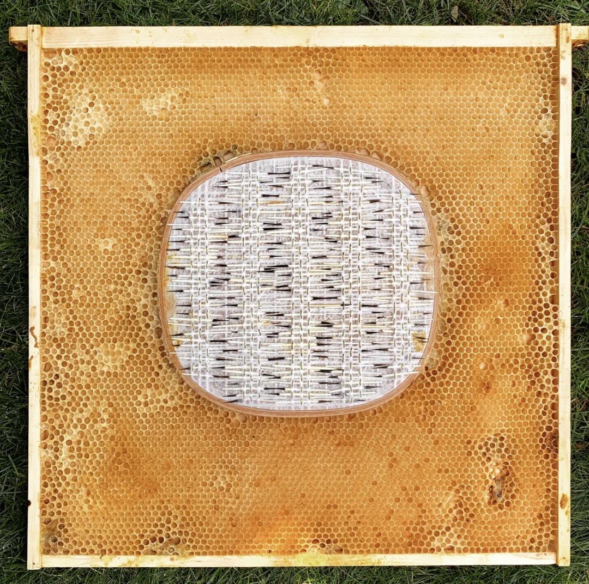
➤ 木牙MUYA: 最近在做什么工作或者有趣的事情呢？大学时期的专业方向是什么呢？
What kind of work or interesting things have you been doing recently? What was your major direction in college?
Ava Roth: 因为与蜜蜂的工作是季节性的，在这个时节，我还在参与和蜜蜂协作的作品过程中。当寒冷的天气到来并且蜂箱在冬天关闭时，我将注意力转向“迷恋的绘画”。我真的很喜欢这种与季节同步的周期性工作方式！在大学里，我没有追求视觉艺术。尽管我对艺术感兴趣，但我主修历史和环境研究！
Because the work with bees is seasonal, at this point I am still deeply engaged in this collaborative bee process. When the cold weather sets in and the beehives are closed up for the winter, I will turn my attention back to encaustic painting. I have really grown to love this cyclical pattern of my work being synced with the seasons! In college, I did not pursue visual art. Although I was interested in art, I was majoring in history and environmental studies!
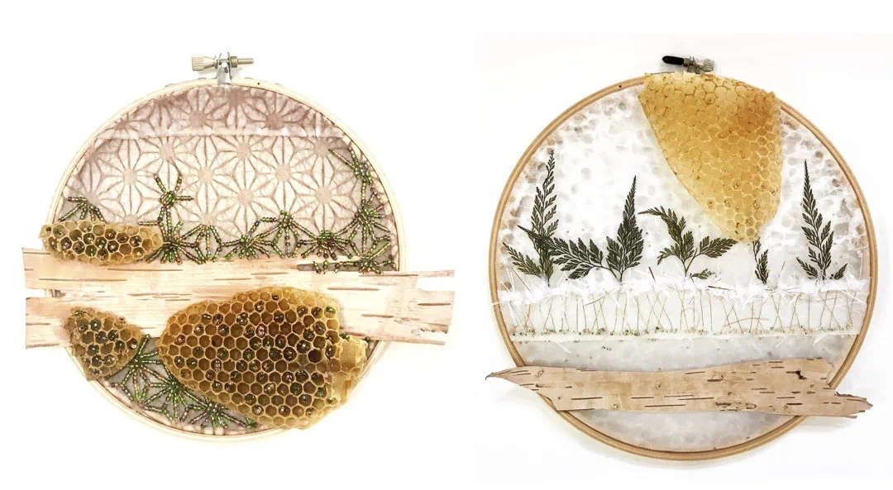

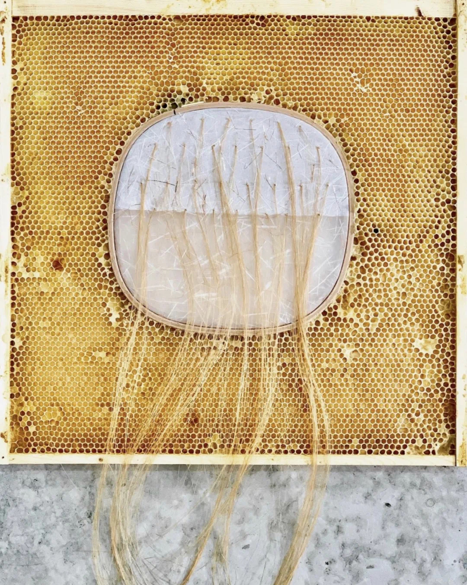
✯ Which inspire your works most ✯
“But the effect of her being on those around her was incalculably diffusive: for the growing good of the world is partly dependent on unhistoric acts; and that things are not so ill with you and me as they might have been, is half owing to the number who lived faithfully a hidden life, and rest in unvisited tombs.”
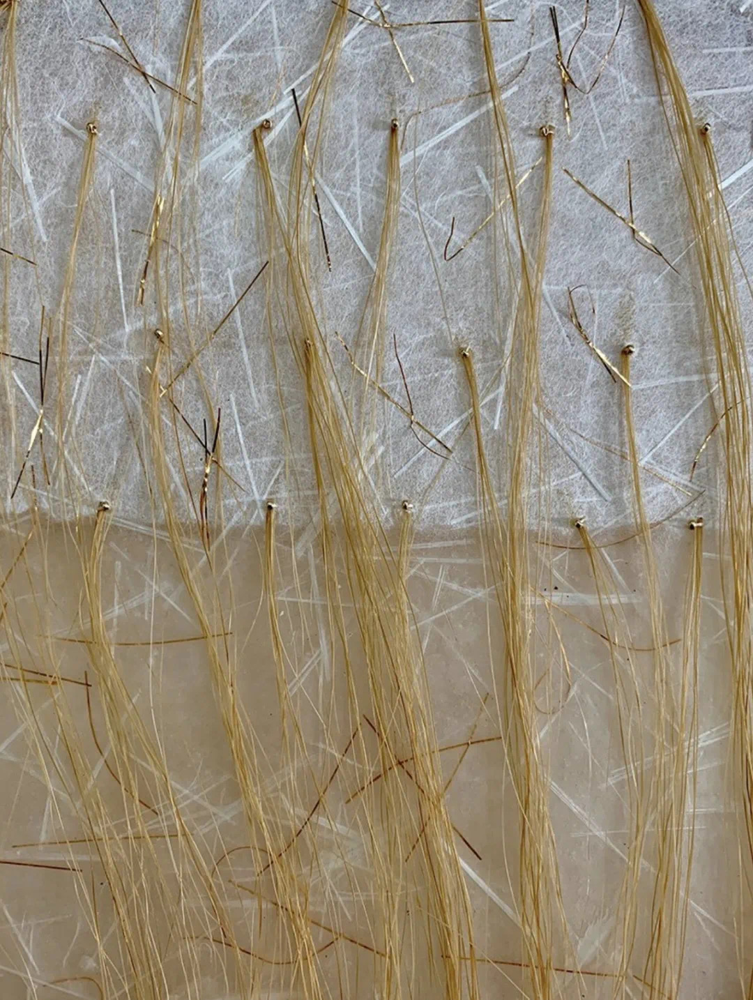
木牙微信订阅号